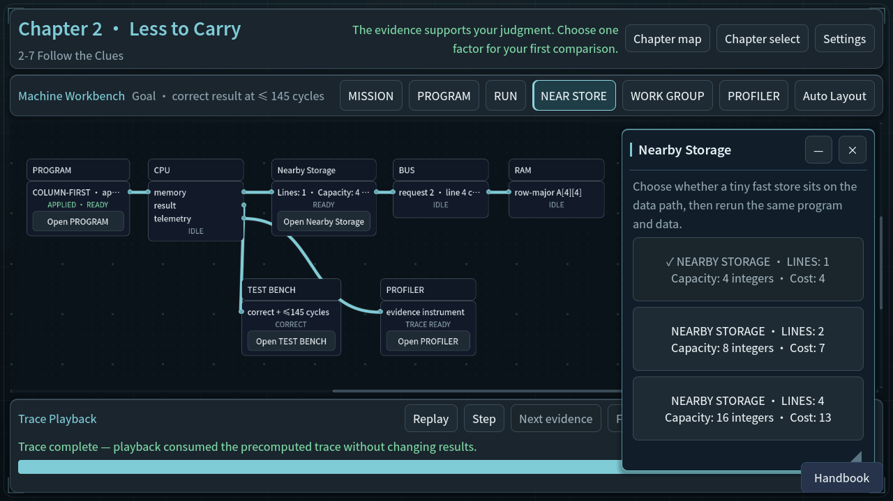
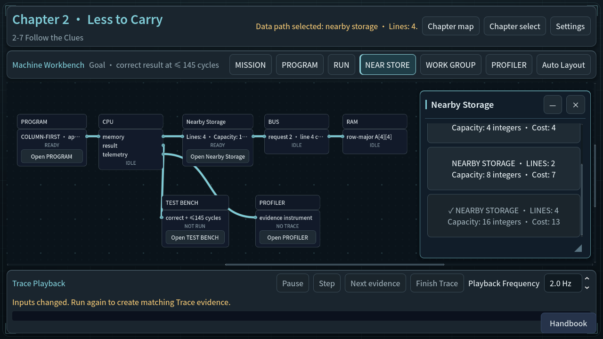
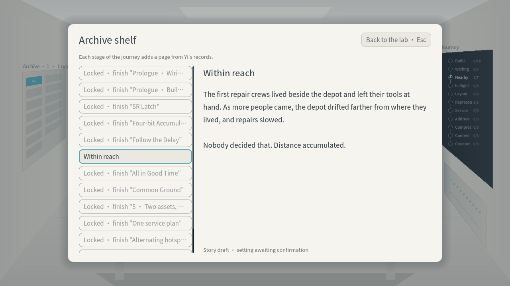
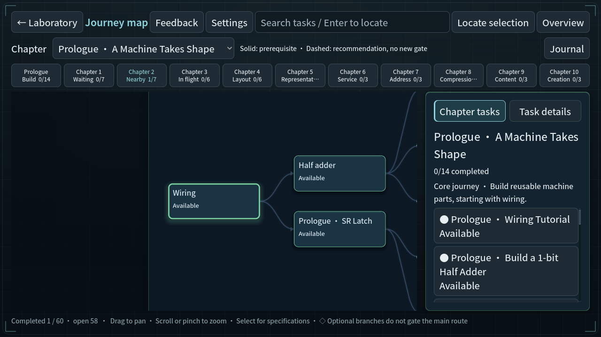
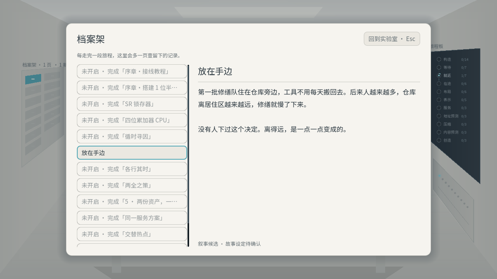
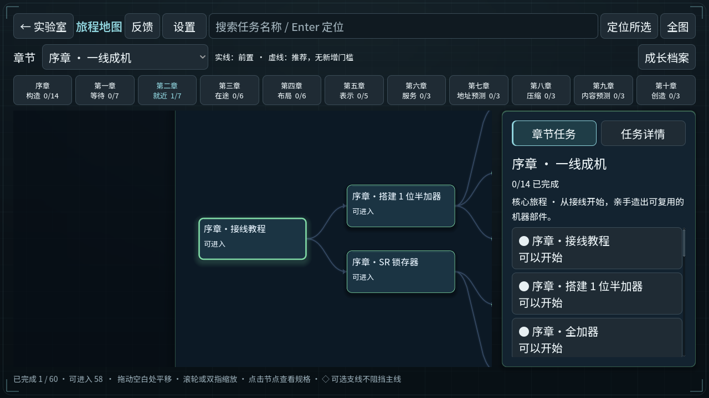

章末回应与路线选择
隔离Test模式进入第二章综合任务，实际运行、完成、返回与回应。Viewport输入；不代表完成前置旅程或真人验收。
修复前：可见缓存选项未收到点击 · en-before-cache-choice
修复后：实际滚动并应用四行缓存 · en-cache-four-lines-applied
最终 · en-chapter-archive-candidate
最终 · en-chapter-journey-map
最终 · en-chapter-next-exploration最终 · en-earned-chapter-answer最终 · en-earned-chapter-question 修改前：没有对应路线选项的问题 · zh_CN-before-exploration最终 · zh_CN-chapter-archive-candidate
修改前：没有对应路线选项的问题 · zh_CN-before-exploration最终 · zh_CN-chapter-archive-candidate
最终 · zh_CN-chapter-journey-map
最终 · zh_CN-chapter-next-exploration最终 · zh_CN-earned-chapter-answer最终 · zh_CN-earned-chapter-question